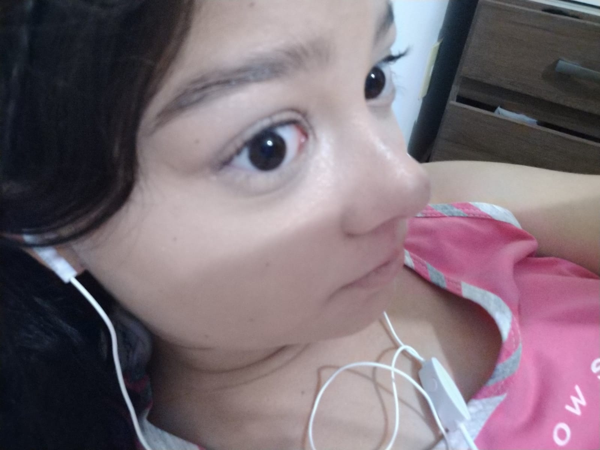

Eu te amo Ana Julia ♥

Ana Julia, desde o momento em que te conheci, soube que você era alguém especial. Seu sorriso iluminou aquela pequena recpeção e sua risada conquistou meu coração. Cada momento que passo com você é um presente e aprecio cada segundo dele.
Você é o sol que ilumina meu dia, a calma em cada tempestade e o porto seguro onde sempre posso encontrar paz. Adoro o jeito que você me faz rir, o jeito que você sempre sabe como me fazer sentir melhor e o jeito que você sempre me apoia em tudo que faço.
Amo você, Ana Júlia, de todo coração e alma. Você é o amor da minha vida e prometo estar sempre ao seu lado, apoiá-la, amá-la e valorizá-la. ♥
Aqui o poema que eu fiz para você
Seus olhos são como um farol, mostrando o caminho.
Em cada linha, há uma mensagem para você.
Seu sorriso é como um abraço doce.
Você é um poeta de coração.
Ana Júlia, flor que desabrocha.
Em cada linha você pode sentir o cheiro da essência da vida.
Cada versículo lhe dá uma parte de você mesmo.
Em cada linha, seu precioso coração.
Sua linguagem corporal mostra que você está feliz.
Cada palavra é como um poema.
Ana Júlia, você é como uma estrela brilhante!
Enquanto você caminha, o mundo te cativa.